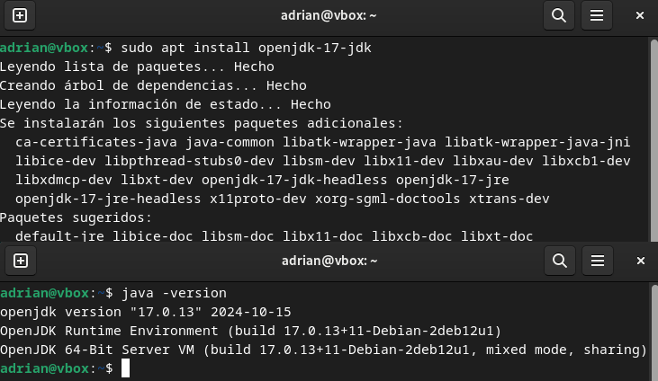

Instalación de WildFly en Ubuntu
Requisitos Previos
1. Instalar Java Development Kit (JDK)
WildFly requiere JDK 8 o superior. Para instalarlo en Ubuntu, ejecuta los siguientes comandos:
sudo apt updatesudo apt install openjdk-17-jdk
Verifica la instalación con:
java -version

Proceso de Instalación
2. Descargar WildFly
Descarga la última versión estable de WildFly desde el sitio oficial:
wget https://download.jboss.org/wildfly/34.0.1.Final/wildfly-34.0.1.Final.tar.gz
Si no tienes instalado wget, usa:
sudo apt install wget
3. Extraer los Archivos
Descomprime el archivo descargado y muévelo al directorio /opt:
sudo apt install unzipsudo tar xzf wildfly-34.0.1.Final.tar.gz -C /opt/
Renombra el directorio si es necesario:
sudo mv /opt/wildfly-34.0.1.Final /opt/wildfly
4. Configurar Variables de Entorno
Añade las siguientes líneas al archivo ~/.bashrc para configurar las variables de entorno:
export WILDFLY_HOME=/opt/wildflyexport PATH=$PATH:$WILDFLY_HOME/bin
Aplica los cambios con:
source ~/.bashrc
5. Iniciar WildFly
Inicia WildFly ejecutando el siguiente comando:
$WILDFLY_HOME/bin/standalone.sh
Para detener el servidor, usa:
$WILDFLY_HOME/bin/jboss-cli.sh --connect --command="shutdown"
Verificación de la Instalación
6. Comprobar la Instalación
Accede a la consola de administración de WildFly en tu navegador:
http://localhost:9990
Deberías ver la interfaz de administración de WildFly.